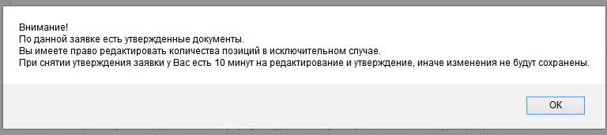
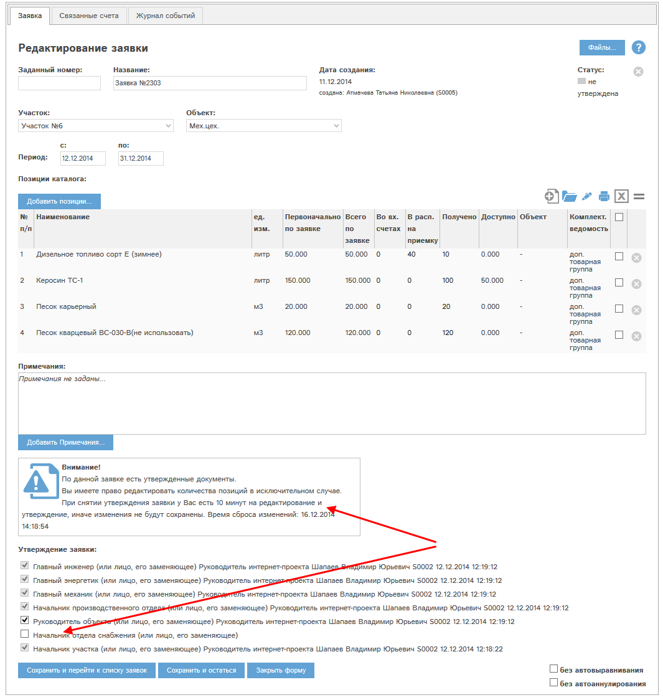
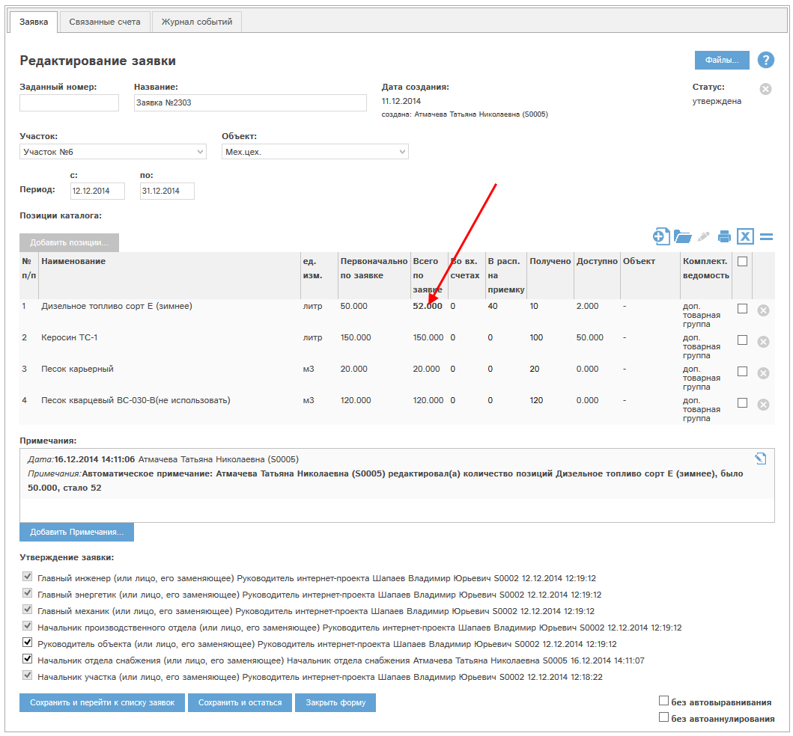

У сотрудников, имеющих право утверждать заявку в роли Начальник отдела снабжения, есть специальные права на редактирование количеств позиций в заявке, по которой есть утвержденные связанные документы. Это заявки в статусах «не выполнен», «выполнен».
Для того, чтобы отредактировать количества позиций в заявке, сотруднику необходимо:
Пример.
Снимем утверждение в роли начальника отдела снабжения. Программа выдаст сообщение:

Рис. 3.1 Сообщение при снятии утверждения заявки с утвержденными документами.
После снятия утверждения карта заявки примет вид:

Рис. 3.2 Карта заявки с утвержденными документами после снятия утверждения.
Необходимо отредактировать требуемые количества и вновь утвердить заявку:

Рис. 3.3 Количество позиций отредактирована, заявка утверждена.